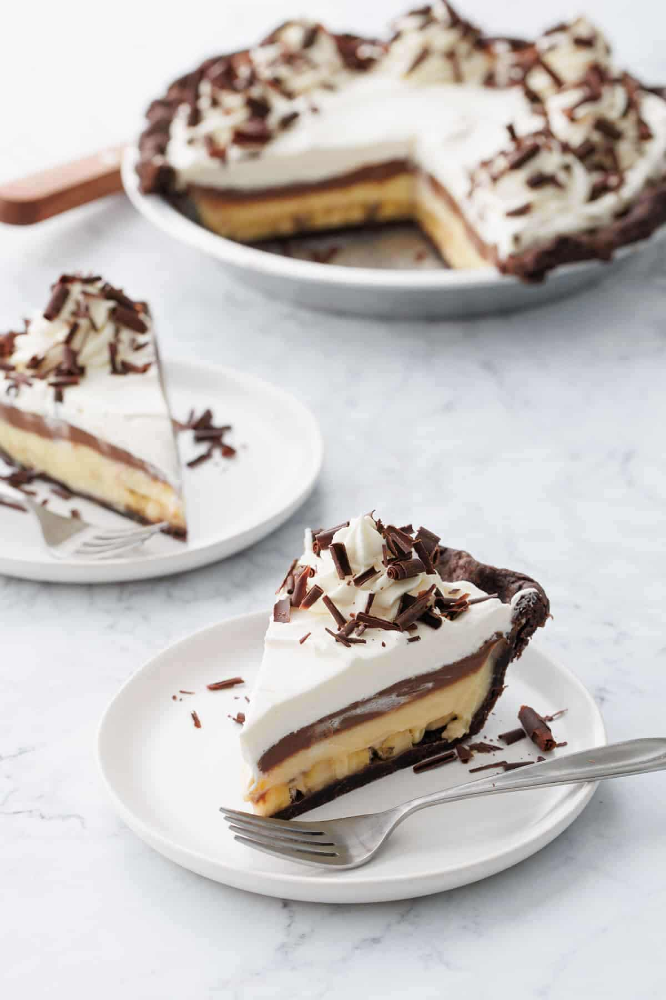
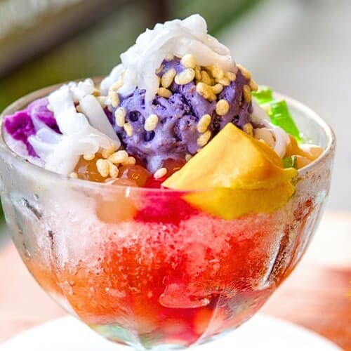

Welcome to Rachel's Recipe
Delicious, easy-to-follow recipes for home cooks. Find meal ideas, cooking tips, and step-by-step guides.



Browse Recipes
About the Website
Rachel’s Recipe is a welcoming space for food lovers who enjoy cooking at home. Explore classic comfort meals and discover simple techniques that make cooking fun and satisfying.
We focus on approachable, family-friendly recipes and provide step-by-step instructions, ingredient swaps, and plating tips. New content is added regularly — check the Recipes page for full guides.
Quick tips: use a thermometer for meats, rest fried food on a rack (not paper), and taste as you go.